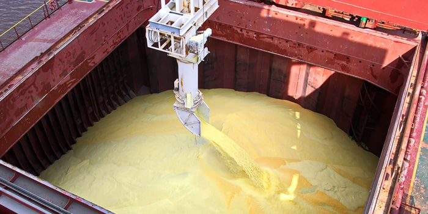

Perhaps the only established methodology to quantify solid bulk cargo on board vessels is a draught survey.
Although a draught survey is considered simple in principle, experienced surveyors will not hesitate to put forth that in practice, the process is rather complicated, involves numerous factors, and only with adequate knowledge and insight few of these can be established with a degree of accuracy.
Thereby, the application of technical knowledge of the attending surveyor, his experience as well as common practice of good seamanship normally associated with this activity cannot be overstated.
Having said that, it is not uncommon that limitations that may be encountered during the survey process are generally construed as an excuse in attempting to achieve the objective, especially by inexperienced surveyors.
Surveyors from Constellation Marine services will always ensure a technically sound outcome, and in simple terms “an adjustment” is not considered a priority at all in obtaining survey results.
This in fact produces undesirable outcomes, loss of time, discrepancies in cargo quantities and a general atmosphere of distrust and confusion many times apparent only after a period of time.
Over the years, Constellation Marine services have gathered exceptional amounts of experience in conducting draught surveys, and these have proven beneficial to our clients serviced.
Simply put, to arrive at the calculated weight of the cargo, the weight of the ship is determined both before and after loading and allowances made for differences in ballast water and other changeable items. The difference between these two weights is the weight of the cargo.
A traditional draught survey commences with a reading of the ship’s draught, on both sides,
forward, amidships and aft. However here there are a few limiting
factors which must be taken into consideration:
• The draught should be read from a position as close to the waterline
as possible to avoid parallax, although this may not always be practicable,
but can be achieved.
• It is often difficult to accurately read the draught because of
prevailing weather conditions and the presence of waves on the water
surface. A vessel may have also developed a slight roll, leading
to further inaccuracies.
• Also consider that a ship moored in a tidal stream or current
will be affected by squat, particularly in shallow water
• A draught reading can be affected when there is a large difference
between the temperatures of the air and the water. There is currently&
unfortunately no known acceptable method of correcting for this.
• Consider that the draught must be corrected for the density of
the water in which the vessel is floating. It is difficult to obtain
a reliable average density because this will vary at different levels
and locations around the ship.
• The ship’s displacement table may not, however, always be completely
accurate and this is especially true in “sister ship” tables. Similarly,
the trim correction may be derived by the use of various formulae,
not all of which are entirely accurate.
• The designed lightship does not remain the same in old ships as
steel get added as a result of vessel undergoing repairs involving
steel replacement.
• At the time of reading the draft the vessel should be upright.
IN PRACTICE – RECOMMENDATIONS
Reading Draught Marks
When draught surveys are undertaken by independent surveyors, it should be in conjunction with the ship’s officers .. Draft survey always should be carried jointly with the vessel’s chief officer or second officer if instructed by the chief officer. .
It is imperative that Masters of the vessels permission should be sought informing him adequately about the draught survey and on whose behalf it is needed to be carried out.. This is important, especially for initial draft surveys, so that the Master is prepared. It may be noted also that while the safety of the ship may NOT ALWAYS provide the ballast tanks to be either pressed up, or completely empty / dry (which is the ideal scenario needed for draft survey), it is important to check that the vessels trim is ALWAYS within the limits of the tank calibration tables. The trim and heel should never exceed the maximum trim & heel for which corrections may be obtained from the vessel’s stability book.
Onboard ballast is required to be calculated by sounding all ballast tanks and using vessel’s tank calibration tables.
It goes without saying that the Forward draft on port side and starboard side, the mid-ship draft on port side and starboard side and the aft draft on the port and starboard side are necessary to be read and recorded for commencement of draft survey.
For vessels lying at exposed berths or anchorages, where waves and sea swell disturbances are almost inevitable, even to the extent that the vessel may be rolling and pitching, whereby water level keep going up and down over the draft marks. it is usual to take upper level and lower level draft readings number of times and mean of average used to obtain a fairly accurate draft at that location.
A vessel’s remote draught gauge should never be used for surveys due to lack of the necessary accuracy and the possibility of errors, which may accumulate over the working life of the instrument.
When practical and possible, it is always better to have the seaside drafts read from the water level through a launch boat or tender.
Density of the Water in which Vessel is Floating.
The below recommendations are those which might generally provide a more accurate result, and while they may not be all the time practical to perform, Should circumstances during the survey are conducive surveyor must observe the following among or all actions can be looked into:
It is prudent to obtain samples of the water in which the vessel is floating at, or very close to, the time at which the draught are read, especially at ports or anchorages where there is more than a diurnal change in tide.
The density should be checked quickly after obtaining the sample as there may be temperature differences between the actual sampling and the time of checking its density. This has to be done using a well calibrated & certified hygrometer.
Depending on the length of the vessel, several samples, say between one and three, should be taken.
The samples should be obtained using a closed sampling can at
a depth of approximately half the existing draught of the vessel.
If possible, a slow-filling container may be used to obtain an average
sample from keel to waterline.
When reading the hydrometer floating in the sample of water, the
eye of the observer should be as close to the water level as possible
to avoid parallax errors and errors due to the meniscus.
Ballast Water Tanks
The calculation of the weight of ballast water is perhaps considered the main source of error in a draught survey and may result in very large inaccuracies in the quantity of cargo calculated.
Ballast water tanks, including peaks and those said to be empty,
must be carefully sounded or proven to be full by pressing up and
overflowing from all air pipes if permissible.
UNDER NO CIRCUMSTANCES HOLD BALLAST SHOULD OVERFLOW during
initial draft survey.
Spaces such as the duct keel and voids, particularly those of
the lower stools situated at the base of transverse bulkheads, between
cargo holds, must be checked when safe to do so and proved in the
same condition at initial and final surveys.
At the initial draft survey, it is prudent to establish where the
ballast was lifted. If it is determined from a single source, a
few random samples to determine density would suffice, otherwise
it would be deemed necessary to establish individual densities of
the tanks.
IT IS NEVER WISE TO seek or ask for ballast tank water densities from the Master assuming the last port being the source of the ballast. Keep in mind that most likely during intercontinental voyages, the vessel MUST have performed a ballast water exchange, either by flow through or sequential exchange.
It is not easily possible to determine ballast tank sediment,
muck and sludge quantities
- The results are usually assumed in the constant, but the
value may be significantly inaccurate.
Fuel Oil Tanks
The volume of oils in every tank should be measured and recorded.
After completion of the bunker survey, the totals of each oil found
must be agreed with the Chief Engineer and the Master.
The relative densities of the most recently delivered oils on board
can be obtained from the bunker delivery certificates.
However, bunkers are almost inevitably mixed with those
already on board, the densities of which are likely to differ.
Calculation for displacement
One of the areas where significant errors often result is from
the incorrect application of the sign in respect of the position
of the LCF (in the first trim correction).
Be cautious – when using a computer program or when using the data
directly extracted from Hydrostatic particulars, it is essential
that the data is carefully and properly interpolated or, sometimes,
extrapolated.
When undertaking initial and final displacement draught surveys
to establish the weight(s) of cargo loaded or unloaded:
• the difference between the net displacement weights provides the
total cargo quantity.
• it is recommended for a cross check that, at the light ship/ballast
survey, the vessel’s light ship weight is deducted from the net
displacement found in order to arrive at the constant.
• Although variable, for several reasons, it should serve as a guide
(ONLY) to the accuracy of the lightship/ballast survey.
• Comparison between ‘Stores variable’ quantities, or mean thereof,
established at previous surveys should be treated with caution unless
the variable is a direct comparison that can be made
• Charter parties often contain reference to an approximate quantity
for the vessel’s constant, which may well create numerous discussions
between the Master and the surveyor - should the constant found
by survey be substantially larger than that quoted by the owners.
• It is recommended that surveyors remain confident in their findings
but must always inform their clients the unusual factors and readings
obtained – better still have them recorded. This is essential should
owners, charterers, or shippers each appoint separate survey companies
to act on their behalf.
A VIEW ON CUMULATIVE ERRORS
Errors can occur when reading and correcting the draughts. It
is suggested that the final fully corrected 3/4 mean draught should
be within ±10 mm of the true mean draught.
The main error to be avoided in this section is incorrect positioning
of the LCF relative to LBP/2, the amidships point.
Error of the water density in which the vessel is floating. Always
ensure that an average sample, or alternatively the average of a
number of water samples, is obtained and that the correct type of
certificated hydrometer is used to obtain the density.
Sounding of tanks. Forget documented tables which may not be accurate, the way of avoiding the main errors in this section of the survey is by ensuring, as best possible, that all volumes of liquids on board ,particularly ballast water, are both correctly quantified and assigned with correct densities. These factors, particularly when applied to ballast water, undoubtedly contribute to the largest number and degree of errors likely to be encountered in draught surveying.
Bearing these reservations in mind, a well-conducted draught survey under reasonable prevailing conditions, it may be capable of achieving a good degree of accuracy.
Our surveyors conducting Draught surveys, irrespective on whose behalf, will ensure an accurate outcome, but more importantly, will also assist in maintaining a record of associated difficulties and limitations encountered during this process, should these be outside the acceptable limits.
At Constellation we have been in the Marine Survey industry long enough to establish a consistent service delivery and a proven track record of performance, which exudes quality, credibility, and trust, and we continue to build upon this all the time. As a result of our integrity, we are empaneled, respected and called upon by all 1,316 groups of P&I Clubs to attend independent claim investigations on behalf of their members including those within the fixed premium P&I club which serve to be a growing trend in the past 3 or so years.
By: Capt. Vispy Rusi Dadimaster
A career spanning 22+ years in various operation and management positions within the Maritime and Shipping Industry, including 8+ years in Fujairah (Port Operation, Agency and Logistic Management), and in command of various types of vessels, including Offshore Dynamic Positioning crafts. Within the professional roles held, I have proven to be result oriented, decisive, possess tremendous interpersonal skills, and am technically oriented My entrepreneurship skills have enabled me to lead and managed teams up to 25 people successfully, achieving challenging objectives, within challenging environments, with an aim to create a positive outcome and impact.